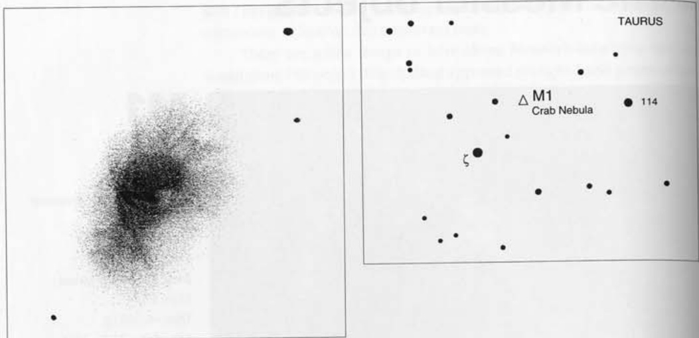

蟹状星云 · Crab Nebula (NGC 1952)

In the vast tapestry of the night sky, few objects command as much reverence and wonder as the Crab Nebula—a celestial remnant of cosmic violence that continues to shape our understanding of stellar evolution. This supernova remnant, the very first entry in Charles Messier's legendary catalog, represents not merely an astronomical object but a living, breathing testament to the explosive power that governs the universe.
在浩瀚的夜空画卷中，蟹状星云以其无与伦比的尊崇地位与神秘魅力傲然屹立——这是一颗恒星的宇宙级暴力遗迹，持续塑造着人类对恒星演化的认知。这团超新星遗迹作为查尔斯·梅西耶传奇星表的第一号天体，不仅仅是一个天文观测对象，更是主宰宇宙的爆发力量之生动见证。
"Located in Taurus which does not contain any stars. Its light is whitish and elongated like a candle flame." — Charles Messier, September 12, 1758
"位于金牛座南角上方的星云，其中不包含任何恒星。其光线呈白色且如烛焰般细长。" — 查尔斯·梅西耶，1758年9月12日
关键参数 · Key Parameters
| 参数 / Parameter | 数值 / Value |
|---|---|
| 类型 / Type | 超新星遗迹 / Supernova Remnant |
| 星座 / Constellation | 金牛座 / Taurus |
| 赤经 / Right Ascension | 5h 34m.5 |
| 赤纬 / Declination | +22° 01′ |
| 视星等 / Visual Magnitude | 8.4; 8.0 (O'Meara) |
| 角直径 / Angular Diameter | 6′ × 4′ |
| 实际尺寸 / Physical Size | ~11 × 7.5 光年 / Light-years |
| 距离 / Distance | ~6,500 光年 / Light-years |
| 发现者 / Discoverer | 约翰·贝维斯 (1731) / John Bevis (1731) |
| 脉冲星周期 / Pulsar Period | 0.033 秒 / Seconds |
历史渊源 · Historical Origins
The Crab Nebula owes its discovery to English astronomer John Bevis, who first observed it in 1731. However, it was Charles Messier's systematic search for comets that brought this nebula into the annals of astronomical history. On September 12, 1758, while hunting for the comet of that year, Messier encountered this mysterious glowing object and recognized the need to distinguish such nebulae from comets—a classification that would eventually grow to include 110 objects.
蟹状星云的发现应归功于英国天文学家约翰·贝维斯，他于1731年首次观测到这团星云。然而，正是查尔斯·梅西耶对彗星的系统搜索才将这团星云载入了天文学史册。1758年9月12日，在搜寻当年彗星的过程中，梅西耶遭遇了这个神秘的发光天体，并意识到有必要将此类星云与彗星区分开来——这一分类最终扩展至110个天体。
"Discovered when observing the comet of 1758." — Messier
"在观测1758年彗星时发现。" — 梅西耶
The nebula's now-iconic name originated from an 1844 drawing made by Lord William Parsons using the 36-inch telescope at Birr Castle in Ireland. While the drawing more closely resembles a horseshoe crab or even a pineapple, the nickname has endured through the centuries, becoming inseparable from the object's identity.
这团星云如今标志性的名称源自1844年威廉·帕森斯勋爵使用爱尔兰比尔城堡36英寸望远镜所绘制的图像。虽然该图与鲎甚至菠萝更为相似，但"蟹状"这一昵称已穿越世纪，与该天体的身份密不可分。
物理构造 · Physical Structure
The Crab Nebula represents a supernova explosion witnessed by Chinese astronomers in 1054 AD—a stellar cataclysm so brilliant it was visible during daylight for 23 days. Today, some 970 years later, the remnant continues to expand at approximately 1,500 kilometers per second, carrying with it the secrets of stellar death and rebirth.
蟹状星云源自公元1054年被中国天文学家目睹的一次超新星爆发——那次恒星灾变如此璀璨，在白天持续可见长达23天。如今，约970年后，遗迹仍以每秒约1,500公里的速度持续膨胀，携带着恒星生死轮回的秘密。
The nebula's architecture is extraordinarily complex, comprising three distinct yet interconnected components:
这团星云的结构异常复杂，由三个截然不同却又相互关联的部分组成：
The Pulsar (中心脉冲星): At the heart of the Crab lies a neutron star spinning 30 times per second—a celestial lighthouse emitting pulses of X-ray, optical, and radio energy every 0.033 seconds. This 16th-magnitude pulsar, designated PSR B0531+21, represents the collapsed core of the original star, compressed to incredible densities.
脉冲星： 在蟹状星云的核心，是一颗每秒旋转30次的中子星——一座天之光塔，每0.033秒释放一次X射线、可见光和射电脉冲。这颗16等的脉冲星（编号PSR B0531+21）是原始恒星坍缩后的核心，被压缩至惊人的密度。
The Inner Bubble (内部气泡): A powerful wind of radiating particles, bound to the object's intense magnetic field, creates an expanding bubble of energized plasma that fills the nebula's interior.
内部气泡： 一股受天体强磁场束缚的辐射粒子强风，创造出一个充满星云内部的膨胀等离子体能量泡。
The Outer Shell (外部外壳): Dense material ejected during the supernova explosion forms the nebula's visible boundaries—a luminous shroud of gas and dust expanding outward into the surrounding interstellar medium.
外部外壳： 超新星爆发时抛出的致密物质构成了星云可见的边界——一层向周围星际介质膨胀扩散的发光气体尘埃外壳。
观测指南 · Observing Guide
"With 7×35 binoculars, this is an amazing object—if you consider that nearly two millennia have passed since the explosion."
"用7×35双筒望远镜即可观测（考虑到这颗超新星爆发已过去近两千年，这实在令人惊叹）。"
One of the most remarkable aspects of the Crab Nebula is its accessibility. Unlike many deep-sky objects requiring massive instruments and pristine dark skies, the Crab rewards observers with even modest equipment. A pair of 7×35 binoculars will reveal a small, ghostly patch of light—a phosphorescent ghost of a star that died nearly a millennium ago.
蟹状星云最引人注目的特点之一是其观测的可达性。不同于许多需要巨型仪器和绝佳暗夜条件才能观测的深空天体，蟹状星云甚至用普通装备就能回馈观测者。一副7×35双筒望远镜就能揭示一小团幽灵般的光斑——一颗约千年前死亡的恒星留下的磷光残影。
At 23× magnification, the nebula shares the field of view with Zeta Tauri, and the nebulous glow resembles a ghostly echo of that star. Yet upon closer inspection, the nebula's structure reveals itself—two halves slightly askew, as if tectonic plates along a fault line had suddenly slipped.
在23倍放大倍率下，星云与天关（Zeta Tauri）共享同一视野，朦胧的辉光恰似那颗恒星的幽灵回响。然而仔细端详，星云的结构便显露真容——两部分略显错位，仿佛断层线上的两块板块突然滑动。
"With a glance at low power, the nebula's midsection appears pinched. A longer look will reveal two halves slightly askew or misaligned."
"在低倍率下初看，星云的中段显得收缩。仔细观察会发现两部分略有错位。"
🔒 受限于篇幅，本文仅展示部分样章。O'Meara 先生完整的观测手记、实测数据及未公开的独家配图，请参阅原著双语典藏版。
👉 立即在闲鱼获取《DEEP-SKY COMPANIONS》中英双语高清典藏版